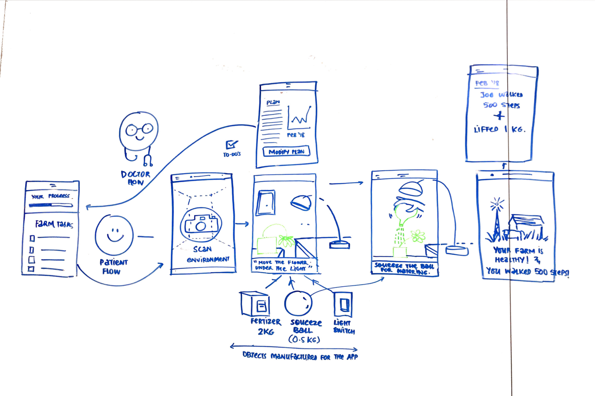

Design
Research
Prototyping
role
team
Ketki Jadhav
Martin Kennis
Martin Kennis
timeframe
March 2017
challenge
Stroke is the leading causing of physical disability in the United States. Nearly 80,000 people suffer from a stroke annually causing serious, long-term impairments. The recovery process for a patient is expensive and difficult. Insurance usually only covers the first few weeks of therapy, leaving patients without a support system. This project was created for The Comprehensive Stroke Center at Allegheny Health Network to develop a solution for stroke patients in any recovery phase with the help of emerging technology.
solution
Wabbit provides affordable, gamified physical therapy for stroke patients.
Inspired by the success of FarmVille and similar applications across the demographic that also most commonly suffers from strokes, we built out the concept for Wabbit, an augmented reality mobile game designed for motor skill recovery of stroke patients. By combining augmented reality and predictive machine learning, Wabbit creates customized exercise plans for stroke patients. Game actions in the game correspond with physical therapy exercises, making the recovery process more engaging and motivating. Patients can now easily access affordable physical therapy in the palm of their hands.
mobile phone usage
We were a little worried about designing a mobile application to help people that struggle with motor skills, and at the same time excited to explore hands-free AR. After speaking with Dr. Eugene Bonaroti, a neurosurgeon from Allegheny General Hospital, it turns out, by the time patients are discharged from the hospital, individuals are able to walk around and perform basic tasks, but they're not confident to venture outside the comforts of their homes their mobile phones are their only easily accessible escape.
how it works
Using Augmented reality and machine learning, Wabbit creates an exercise plan for the patients and converts these into game actions. Wabbit combines the soothing and playful environment of farming, uses augmented reality combined with ambient sounds to create an immersive experience and uses the game actions to help convert the benefits of physical therapy into engaging rehabilitation programs.

home screen
Based off of patient data and machine learning algorithms, patients receive daily tasks for them to complete in the game. As users progress through the game, the application will adjust activities accordingly.
task menu
Interactions on the application are designed to be one-handed for flexibility and ease of use. Users can navigate to a physical therapy task of their choice.


doing tasks
Once a task is selected, the patient can follow the interactive on screen instructions for the exercise. An assistive animation is over laid on top of the game action to help them practice the proper exercise form.
progress report
A task report, along with a progress report, is given to the patient at the end of the game. The reports serve as a source of motivation for the patient to reflect on the progress made since many patients lack a support system during the recovery phase.
demo
blending physical and digital interactions
Traditionally physical therapy involves using equipment (therabands, machines, etc.) to facilitate and help with muscle recovery and motor control. We explored the idea of specially manufactured "smart" equipment that interact with the AR game environment.
IoT devices such as smart watches, smart yoga mats, chest bands can all potentially be encorporated with wabbit. These devices can enable a whole new spectrum of tasks. Imagine for example if a user could score points or complete farm tasks for taking a shower, making coffee, or watering actual plants. This gradual transition to unassisted daily living is the true goal of any rehabilitation program, and IoT devices can play a significant role in enabling that.
understanding the problemspace
stakeholder mapping
To begin, we started by mapping out the different stakeholders of the Comprehensive Stroke Center. We tried to encompass all parties that a stroke patient and the stroke center would influence. In the healthcare system, many parties are involved in a patient’s recovery, so we also did additional research to gain a better understanding of how the health care system and emergency response teams function. With this map, we sought to highlight interesting problem spaces within the domain, and determine where potential friction could emerge.
existing solutions and further research
Following the stakeholder mapping, we honed in on a few areas of interest and conducted competitve analysis on existing solutions. We also talked to a doctor from the Allegheny General Hospital to gain more insight. Interviewing a doctor, a stakeholder in our area of research, was extremely useful in helping us decide where we wanted to focus on.
takeaways
Insurance
Insurance companies only pay for a few weeks of rehabilitation. Systems are designed to make it difficult to get care costs covered. Once sent home, many patients do not have access to expensive rehab programs and are unlikely to pay out of pocket.
Lack of Support
Often, stroke survivors have to seek their own recovery networks or have none at all. Through wabbit, we hope to help foster a support system through other patients.
Long Recovery Time
Physical rehabilitation can take months or years, and even then, 75% of stroke survivors report lasting effects. With such extended recovery times, it is hard for patients to commit to monotonous recovery routines and exercise plans.
Lack of Caregivers
After a patient is sent home, there is generally no follow-up. Some patients are not able to afford post-hospital treatments (such as physical therapy or in-home care).
addressing insights
To apply all the insights from the research, we decided to do design sprints brainstorming activities. In these discussions, we came up with "virtual gardening" as a motivational and calming way to do physical rehabilitation.
Flexibility
Wabbit can be used by any stroke patient who has been sent back home after their insurance period. All these patients have the basic motor skills to hold the phone and the game requires no further assistance. This lets stroke patients take recovery back into their own hands.
Brain Stimulation
We found many literature studies that demonstrated that specific game actions can be targeted to develop specific parts of the brain. Using a game for recovery, we aimed to provide entertainment along with brain enhancing benefits.
Motivation
Because the recovery period is long and progress plateaus at multiple stages, it is important to keep the patient motivated. This is especially important for patients who have no caregiver support. Wabbit has daily progress screens that shows them how far along they have come. Each of physical therapy plans are tailed to the patient, which can prevent patients from hitting walls and feeling like they cannot make progress. Introducing concepts of leaderboards, badges, or other progress markers can also help with motivating patients.
Support Network
Wabbit eventually can also introduce support networks into the app for patients to message and encourage one another through their journeys.
concept exploration
In our initial concept sketches, we focused on shaping and narrowing down the idea for gamified stroke recovery. One of the design choices we had to make was deciding how the user would interact with the AR objects. While using a VR headset with a landscape phone orientation might make it easier for a user to interact with the environment, often times these VR headsets are not cheap or easy to use. Consequently, we designed our app to be a one handed experience so that stroke survivors can interact with AR objects while on their phones.
wireframes
Taking the insights, we began creating digital screens. We all tried a variety of different tactics and design principles. After analyzing the different methods and things we all tried, we combined them to create a unified system and jumping into detailed prototyping. To simplify things for this project, we decided to focus on one interaction in the app. We chose to prototype the daily start screen, one interaction for completing a task, and the daily ending screens.
prototyping
One of the biggest challenges of this project was prototyping the AR interactions. We first tried to prototype the application in Unity, using the AR kit plug-in. However, while it did create the most realistic interactions, it was very difficult to add occlusion and make the hand interactions look real. Consequently, we used Cinema4D, AfterEffects, and Photoshop to make the AR interactions. We also created a hand animation microinteraction to aid a user in understanding how to complete a task.
next steps
If we get a chance to take Wabbit forward, the first thing we would like to figure if how the technical limitations that come with augmented reality, example depth perception, drifting etc. would affect the gameplay and the experience for a patient. We would also like to work with professionals, such as physical therapists and doctors, to test and further develop Wabbit to be an effective option for stroke patients (and general PT patients).